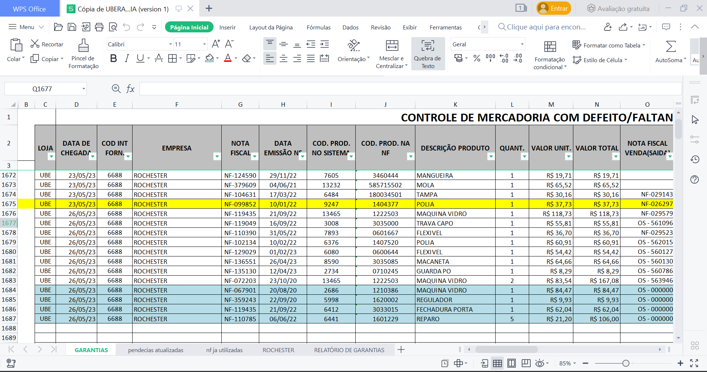
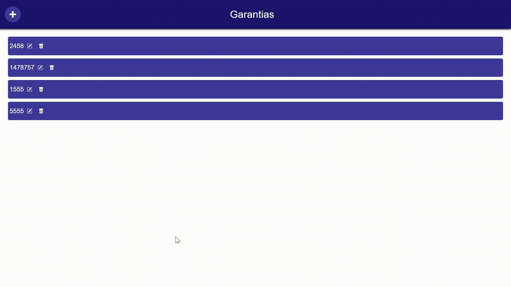
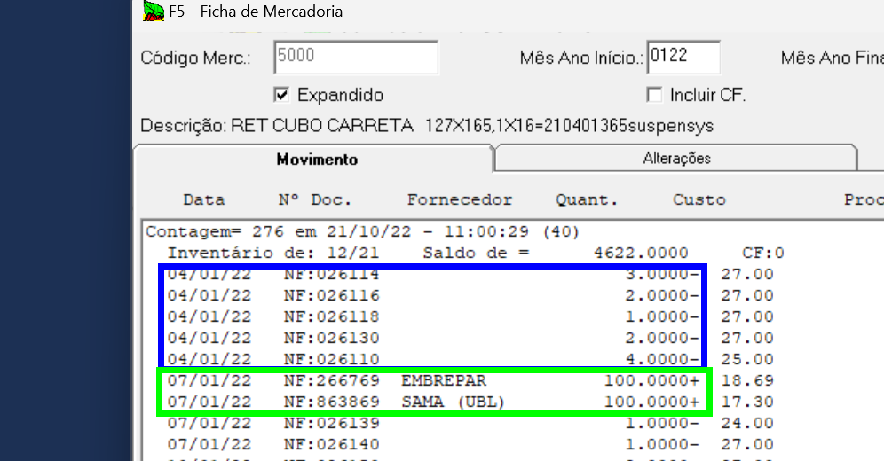

Antes de enviar a peça para nossos fornecedores,
precisamos preparar documentos e coletar informações
para que o processo seja bem sucessido.
1° - Recebimento da mercadoria.
Quando o cliente traz a mercadoria, é interessante que o vendedor solicite
algumas informações se ja não souber é claro. Sendo elas:
Modelo/Ano do Veículo
Qual defeito?
Quantos KM rodou com a peça antes que apresentasse defeito?
Lembrando que, não é obrigatório, mas ajuda bastante no processo de monstagem da garantia.
Toda informação coletada influencia na velocidade e garantia de que o processo finalizará
com melhor resultado para a empresa.
2° - Cadastro da mercadoria no sistema de garantia
Excel
Temos salvo em .xlsx um arquivo construido para servir como uma espécie de cadastro de mercadoria defeituosa.
Neste cadastro informamos toaas as informações necessárias que serão utilizadas durante o processo,
desde o momento em que a peça sai da loja com cliente, até o momento em que ela retorna da garantia.

Sistema Próprio
Em breve contaremos também com um sistema web único para nossa empresa, onde teremos salvo
em um banco de dados, as mesmas informações que antes eram deixadas em um arquivo .xlsx.
Este sistema age de maneira mais intuitiva e mais organizada, para melhorar assim, nosso trabalho administrativo.

Pesquisa e Coleta de Dados
Quando a peça chega no setor de garantia e não possuimos os dados para cadastrar,
temos garimpar e localizar informações favoráveis a nós.
Para fazer isto, utilizamos o sistema Ábaco para ver um relatório detalhado de peça.
No exemplo a seguir, utilizaremos a peça com código 3556 e 5000.
Segue o passo a passo:
Abra o sistema acessando a area de programas abertos no canto inferior direito do windows.
Após aberto, vá na opção Cadastros > Mercadoria
Clique em Consulta, digite o código da peça que deseja cadastrar e tecle Enter.
Irá abrir as informações da peça. Sendo assim, vá na opção Relatório > Ficha ou tecle F5 no teclado.
Entendendo os Dados
O sistema entregará dados como nota fiscal de venda, onde encontraremos a quantidade vendida e a data de emissão da nota,
assim como vamos ver a nota fiscal de compra, com nome da empresa em que a peça foi comprada,
quantidade na nota, numero da nota e data de lançamento no sistema.
Ps.: A data que aparece junto a nota de compra, não se refere a data de emissão da nota e sim
data de lançamento no sistema.
Como pode ver a imagem abaixo, de azul temos informações referente as vendas, e de verde a cada compra que fizemos da peça.
Note que, na coluna Quant., temos o sinal de subtração(-) para simbolizar
a retirada da peça do sistema, e o sinal de adição(+), simbolizando o acréscimo
da quantidade no sistema.

Preenchimento
Após identificar todos os dados da mercadoria, é hora
de preencher a planilha(ou o sistema) para armazenar a informação de que esta
mercadoria se encontra na espera do processo de garantia.
É importante lembrar de colocar todos os campos referente a peça e ao fornecedor.
Toda informação registrada vai ser utilizada nos passos seguintes.
3° - Preenchendo arquivos importantes
Cada fornecedor possui algumas regras relacionado a garantia.
É importante estar ciente de cada uma delas para que não ocorra erros.
No entanto, a maioria consiste em preencher um formulário com informações da peça e do cliente final,
assim como, o envio das notas fiscais de venda(ou O.S.) e compra da peça.
Recomendo neste caso, sempre entrar em cotato antes e perguntar como funciona, e quais
são os passos para montagem do processo de garantia de cada fornecedor, pois daqui para frente,
cada empresa seguirá de uma forma.
No final, enviamos para o fornecedor todos arquivos solicitados por e-mail, e ao combinar, organizamos o envio da mercadoria.
Emissão de Nota fiscal de Garantia
Para emitirmos uma nota fiscal de garantia, precisamos criar uma O.S. para que o setor administrativo
da loja consiga emitir esta nota.
Na O.S., deve-se preencher o preço com o preço de custo da mercadoria informado na nota fiscal
de compra(a mesma nota que enviamos solicitando a garantia).
No campo referente ao vendedor(operador), deve-se colocar sempre 23 - Acerto Estoque, e em Cond.Pag... H - 30dd.
Cód. cliente colocamos como código do forncedor, e definimos o desconto da O.S.
como o total da O.S. subtraindo um centavo(R$0,01), deixando o total como 0.01.
Para finalizar, colocamos na O.S. no campo de informações adicionais, alguns dados descritos abaixo:
Entregamos a O.S. que abrimos para o setor administrativo(Contas a receber), para emissão da nota, certificando que todos os dados para emissão da Nota
estão definidos e corretamente descritos para quem for emitir a nota.
Montagem dos Volumes
Após finalizar toda burocracia, podemos colocar toda mercadoria em uma caixa, lembrando é claro de utilizar a mesma quantidade de caixas que foram descritas
na quantidade de volumes na hora de emitir a nota de garantia.
Deixe as peças bem organizadas no volume e preencha com platico bolha ou algo parecido para que as peças não danifiquem mais. E por ultimo, antes
de lacrar a caixa, coloque dentro dela uma cópia da nota fiscal guardade dentro de um envelope ou saco plastico e escreva, “A/C Setor de Garantia” (Ao cuidado de).
Lacre a caixa o máximo possível, imprima mais uma cópia da nota
e dobre-a deixando apenas o nome da empresa(Uberaupe), o numero da nota, e o endereço do destinatário a mostra.
Coloque em um saquinho para não estragar, e cole na parte externa do volume.
Para nossa segurança e controle, grampeamos a O.S. que abrimos junto a uma cópia da nota fiscal de garantia e pedimos para quem vier pegar, assinar a O.S., nos certificando de que em qualquer eventualidade, tenhamos prova
de que a mercadoria foi retirada da nossa loja. Entregamos uma cópia da Nota para o entregador e ficamos com outra.
Depois é só guardar na nossa pasta e pronto.
A última tarefa é colocar os numeros da NF de Garantia, data de emissão e dia da retirada no nosso banco de dados, para postriormente cobrar ou dar por finalizado o processo.